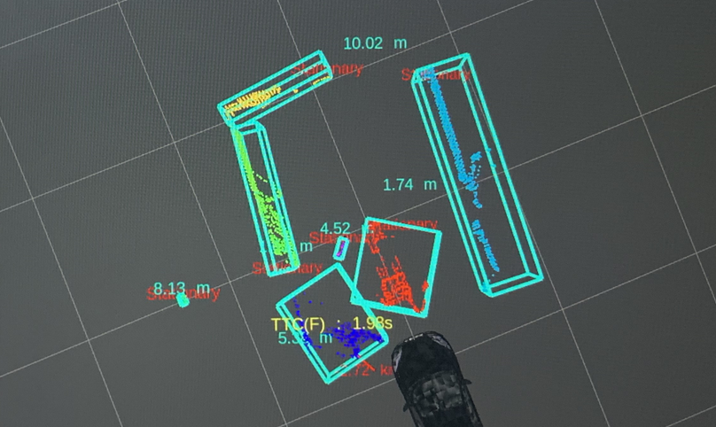
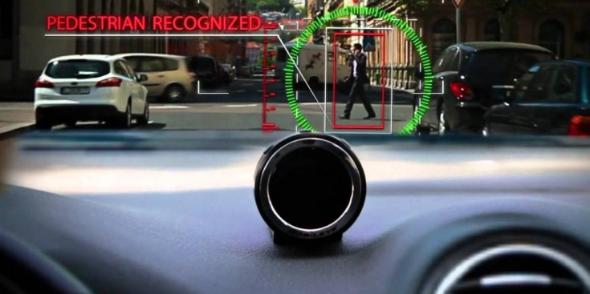

Building an Autonomous car
1. ROS framework and CAN connection
How can I talk to my car? The first objective of implementing an
autonomous car is: "How can I tell the car to move according to my
intentions?". Because we can tell that a car is also a robot, we can
utilize
ROS framework to make connection between the car and the
computer. For getting used to ROS, visit
ros wiki.
The link is directed to ROS classic wiki page. I used ROS classic, but
actually ROS2 is improved version. Also, in case of you are using
python3 for development, you surely need to use ROS2 for compatiblity.
We installed an industrial-grade Linux PC in the trunk of the car,
connected the vehicle and the computer through CAN communication, and
exchanged signals between the car and user application as ROS topics.
Using ROS, we gained a route to communicate with car. So here, we were
able to subscribe information of car ... such as steer, velocity, etc
... and send command to the car ... such as break=10, steer=-10 ...
Run roscore, run your programs which subscribes & publishes, check if
your rosnodes are set properly by your design, and jump into coding the
car's brain!
2. Making my car drive at 100kph.
I was in charge of developing smart cruise control(SCC) and
autonomous emergency braking(AEB) system. SCC is all about
"moving" the car "back and forth". The user application gets the user
input such as "100kph". Here we have the desired velocity, but driving
the car would not work by simply telling the car "run at 100kph!".
Instead, we need to calcuate break and accel pressure to match the
desired velocity.
PID control is simple but powerful way to staisfy requirements.
Yes, finding kp, kd, ki for pid control might go through heuristic
methodology, yet it is the most efficient way to get desired system
outputs by controlling unlinearly related inputs, such as motor power,
break pressure, etc.
3. Object recognition: Point cloud or Vision?
In AEB and SCC system, there's more than just controlling velocity of
the car: The car needs to "see" and "understand" the objects.
It is obvious why a car needs to be able to perceive objects. Without
object perception, the car will not be able to stop because it does not
know that an object exists. Two processes are required to enable the car
to "see": detecting the object from raw data and running an algorithm to
make the car react to the current situation.
Recognizing the object


Our team utilzed LiDAR sensor and Mobileye for sensing
object.
We used the source code of the
AutoLidarPerception
library to extract objects from the point cloud of LIDAR. For Mobileye's
vision data, Mobileye separates objects such as vehicles and pedestrians
and provides information via CAN communication. Point cloud data and
vision data have their own advantages and disadvantages. Point cloud
data can sense distance information well, while vision data can better
identify what objects are. In addition, vision data may be slower to
process than point cloud data.
Our autonomous driving system cannot afford to miscalculate distances
and requires real-time data processing. Even a slight delay of 0.5
seconds could lead to a serious accident. Therefore, it may seem that
LIDAR is more suitable, but it is difficult to accurately identify the
type of object with point cloud data. Through the AutoLidarPerception
library, we simply grouped the point cloud data into boxes and
heuristically determined whether the object was dangerous or not based
on the size of the box. This could lead to malfunctions, such as sudden
emergency stops caused by incorrect recognition.
Therefore, I solved the problem by fusing vision data and LIDAR data. I
used the object class information obtained from the vision data and the
distance and position information from the LIDAR to determine the
object's danger level and location. In addition, if data was lost in
either sensor, I ensured that the two sensors assisted each other based
on priority to avoid any data gaps.
Reacting to objects' existence
Using the approximation of the bicycle model with freedom degree 2 and
experimental data, we calculated the range of the trajectory and
stopping distance of the car depending on its current speed,
acceleration, and direction angle. Based on the objects in the
corresponding range, whether they are preceding vehicles or other
objects such as mainly corner walls or safety cones, we executed speed
control algorithms.